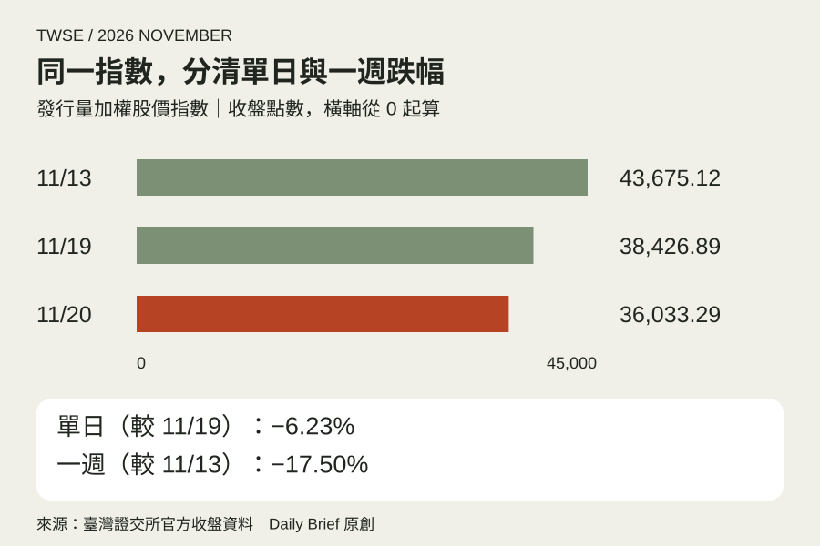

MARKETS / THE ESSENTIALS
台股單日跌 6.23%、一週跌 17.50%，全球科技股賣壓擴散
收錄於 2026-11-21 日報 · 臺灣證交所官方加權指數歷史資料
已確認的進展
- 證交所官方資料：11 月 20 日臺灣交易日收盤 36,033.29 點，較 19 日 38,426.89 點跌 2,393.60 點，計算跌幅 6.23%；相較上週五 13 日 43,675.12 點，一週跌幅 17.50%。兩者比較基準不同。
- Schwab 20 日美東 09:16（臺灣 22:16）評論指出科技股賣壓延續，將 AI 融資／監管疑慮與利率預期列為壓力。這是分析者歸因，不能證明台股每筆賣單的原因。
影響與限制
- 單日與單週均出現顯著跌幅，顯示集中持股與市場波動可能同時放大損失。 較晚美股盤中／收盤數據的 AP、Reuters 原文管道受阻，尚待核實；未將早間評論冒充 20 日美股收盤，也不宣稱跌勢已結束。不提供買賣指令。

原文與查核
以上為整理與解讀，重要細節請回到原文核對。
- 臺灣證交所官方加權指數歷史資料 ↗發布 2026-11-20 · 查核 2026-11-21T05:08:17+08:00
- Charles Schwab 原始市場評論 ↗發布 2026-11-20 · 查核 2026-11-21T05:08:17+08:00